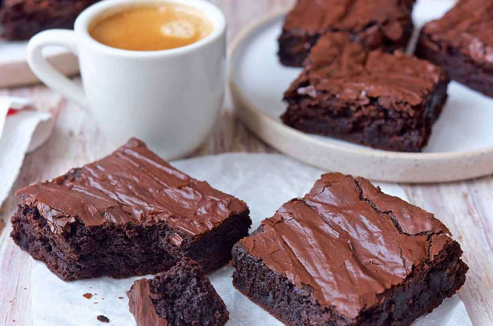

Brownies

Ingredients
- 4 large eggs
- 1 1/4 cups dutch-process cocoa
- 1 teaspoon salt
- 1 teaspoon baking powder
- 1 teaspoon espresso powder
- 1 tablespoon vanilla extract
- 16 tablespoons unsalted butter
- 2 1/4 cups granulated sugar
- 1 1/2 cups flour
- 2 cups chocolate chips
Steps
- Preheat the oven to 350°F. Lightly grease a 9" x 13" pan.
If you plan to turn the whole sheet of brownies out of the pan at once,
grease the pan, line it with parchment, and grease the parchment.
- Crack the 4 eggs into a bowl, and beat them at medium speed with the cocoa,
salt, baking powder, espresso powder, and vanilla for about 1 minute,
or until smooth. You can do this while you're melting your butter (next step).
- In a medium-sized microwave-safe bowl, or in a saucepan set over low heat, melt the butter,
then add the sugar and stir to combine. Or simply combine the butter and sugar,
and heat, stirring, until the butter is melted. Continue to heat (or microwave) briefly,
just until the mixture is hot (about 110°F to 120°F), but not bubbling;
it'll become shiny looking as you stir it. Heating the mixture to this point
will dissolve more of the sugar, which will help produce a shiny top crust on your brownies.
- Add the hot butter/sugar mixture to the egg/cocoa mixture, stirring until smooth.
- Add the flour and chips, stirring until smooth. Again, adding the chips helps produce a shiny top crust.
- Spoon the batter into a lightly greased 9" x 13" pan.
- Bake the brownies for 28 to 32 minutes, until the edges feel set, and the center should look very moist,
but not uncooked. When testing to see if brownies are done,
take a toothpick or the tip of a sharp knife and carefully poke it into the center of the pan,
digging around just enough to see the interior. You should see moist crumbs, but no uncooked batter.
Yes, you'll be left with a small divot in the center of your brownies;
just cut around it when you're cutting the brownies into squares.
- Remove them from the oven and cool on a rack before cutting and serving.
- Store any leftovers, well-wrapped, at room temperature for 5 to 6 days. Freeze for longer storage.